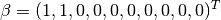
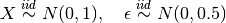
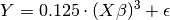
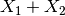
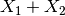
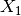
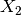

Quick Start¶
Joshua Loyal, January 2018
In [1]:
%matplotlib inline
import numpy as np
import matplotlib.pyplot as plt
import matplotlib as mpl
from mpl_toolkits.mplot3d import Axes3D
mpl.rcParams['figure.figsize'] = (10, 8)
The sliced package helps you find low dimensional information in
your high dimensional data. Furthermore, this information is relevant to
the problem’s target variable.
For example, consider the following data generating process:



Where  is a 10-dimensional feature matrix. Notice that
is a 10-dimensional feature matrix. Notice that
 only depends on through a linear combination of the
first two features: . This is a one-dimensional
subspace. The methods in
only depends on through a linear combination of the
first two features: . This is a one-dimensional
subspace. The methods in sliced try to find this subspace.
Let’s see how sliced finds this subspace. We start by generating the
dataset described above. It is example dataset included in the
sliced package:
In [2]:
from sliced.datasets import make_cubic
X, y = make_cubic(random_state=123)
X.shape
Out[2]:
(500, 10)
The surface in three-dimensions is displayed below. Note that we normally do not know that  and  contain all the information about the target.
In [3]:
ax = plt.axes(projection='3d')
ax.plot_trisurf(X[:, 0], X[:, 1], y,
cmap='viridis', alpha=0.2, edgecolor='none')
ax.scatter3D(X[:, 0], X[:, 1], y, c=y,
cmap='viridis', edgecolor='k', s=50, linewidth=0.5)
Out[3]:
<mpl_toolkits.mplot3d.art3d.Path3DCollection at 0x2b1884dda940>
To learn a low dimensional representation we use the
SlicedInverseRegression algorithm found in sliced. Fitting the
algorithms is easy since it adheres to the sklearn transformer API. A
single hyperparameter n_directions indicates the dimension of the
subspace. In this case we want a single direction, so we set
n_directions=1. The directions_ attribute stores the estimated
direction of the subspace once the algorithm is fit. The following fits
the SIR algorithm:
In [4]:
from sliced import SlicedInverseRegression
sir = SlicedInverseRegression(n_directions=1)
sir.fit(X, y)
Out[4]:
SlicedInverseRegression(alpha=None, copy=True, n_directions=1, n_slices=10)
To actually perform the dimension reduction we call the transform
method on the data:
In [5]:
X_sir = sir.transform(X)
plt.scatter(X_sir[:, 0], y,
c=y, cmap='viridis', edgecolors='k', s=80)
plt.xlabel('$X\\beta_{sir}$')
plt.ylabel('y')
Out[5]:
Text(0,0.5,'y')
The cubic structure is accuratly identified with a single feature.
sliced reduced the dimension of the dataset from 10 to 1!